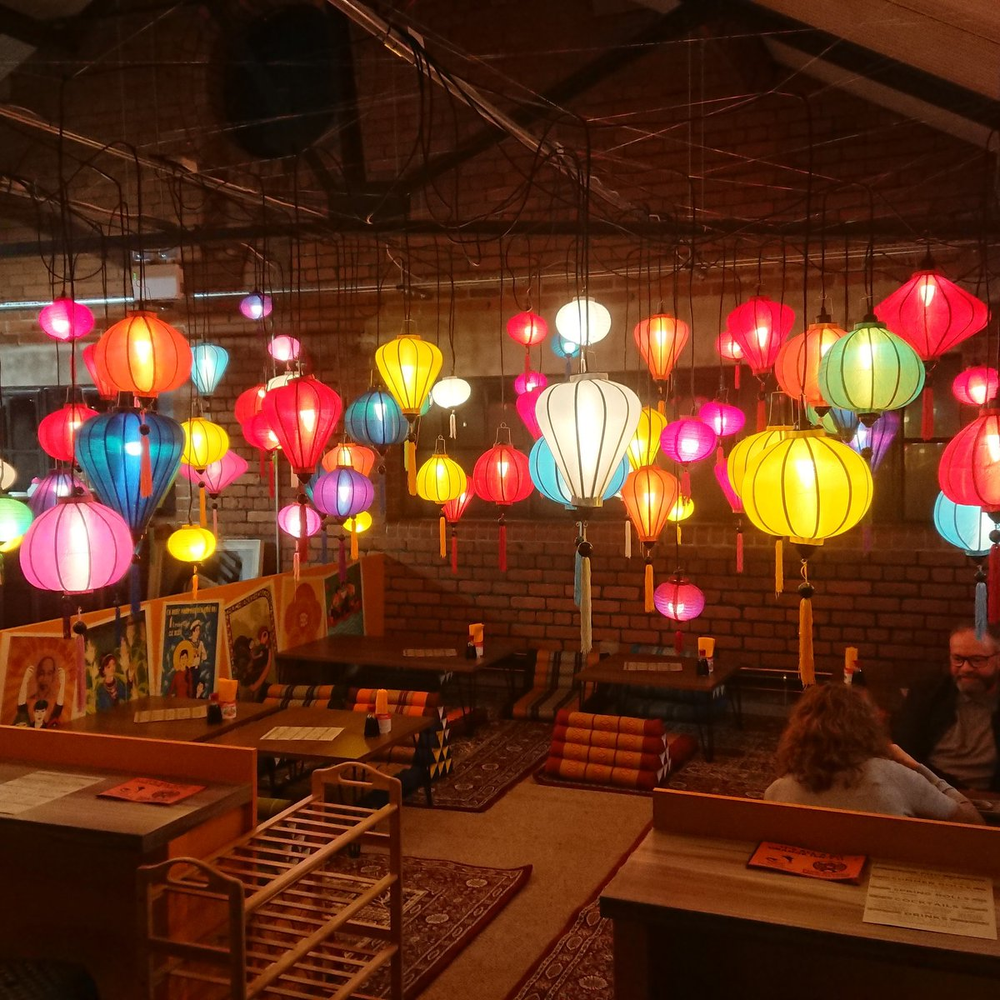
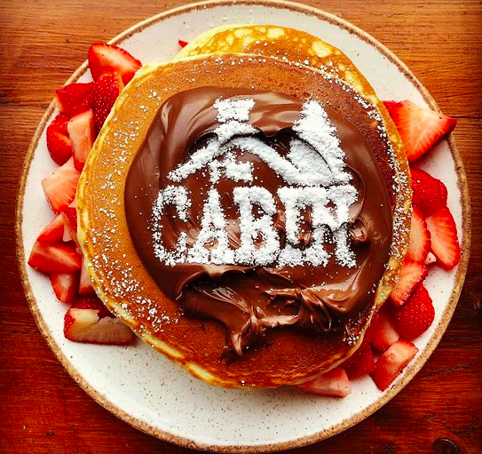
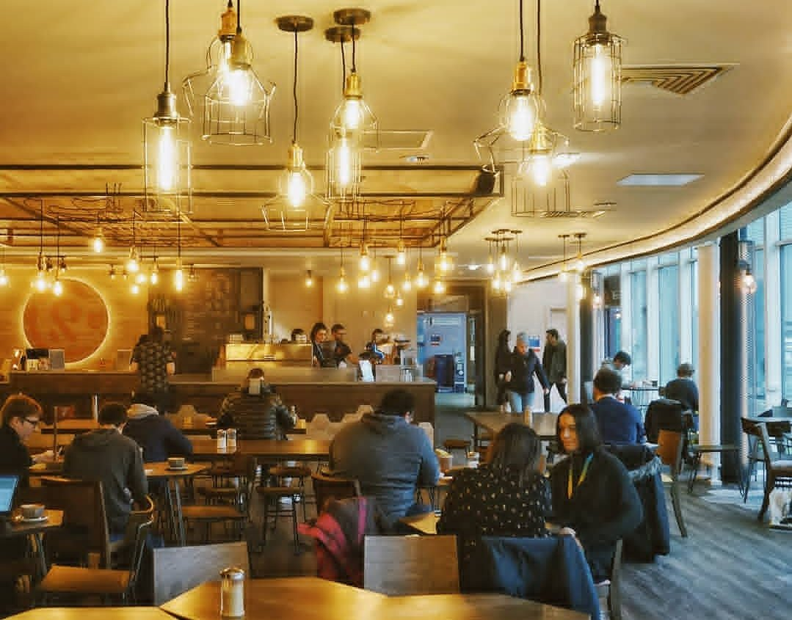
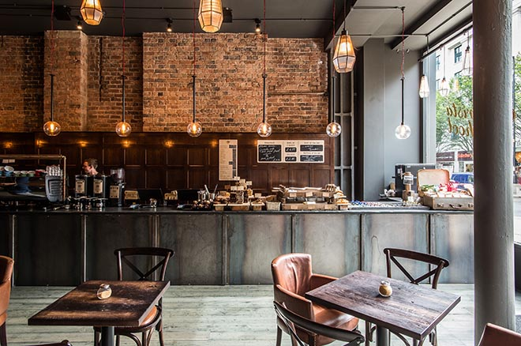
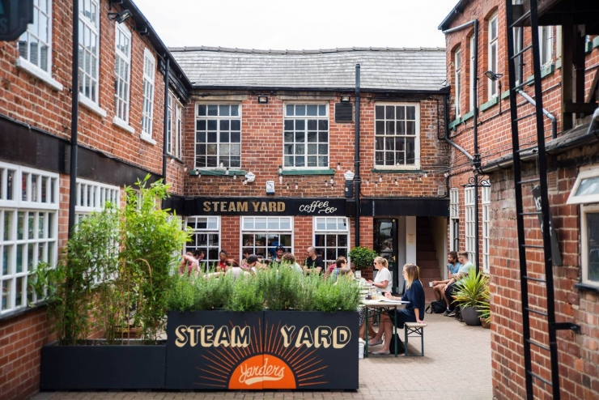

Nam Song
With two different locations in Sheffield, Nam Song is a unique vietnamese café particularly popular amongst students. With its easily identifiable vibrant orange decor, and authentic floor-cushion seating, Nam Song has a vast menu ranging from refreshing fruit teas to-go, to rich full meals guaranteed to leave anyone satisfied. The original location in Broomhill is easily accessible for University of Sheffield students, and the recently opened Sharrow Vale venue is ideal for Hallam students. In 2018, Nam Song was voted as Sheffield’s best south-east Asian restaurant in the Social Sheffield Award, while also raising awareness and funds in aid of the ongoing effects of Agent Orange; check out their website for a full account of their charitable work!

Nam Song Website
Google Maps
Google Maps
The Cabin
If you love homely breakfast food, this café has you covered; specialising in pancakes and waffles, The Cabin is a local establishment well known for its instagram-able treats! Also serving a wide range of speciality hot drinks, this café prices themselves on a cosy atmosphere perfect for a relaxing brunch. It’s ideal location just off The Moor is convenient for both transport links and a little post-brunch shopping. Unfortunately for us, due to its popularity we’d definitely recommend booking in advance.

The Cabin Website
Google Maps
Coffee Revolution
Located within the University of Sheffield’s own Students Union building, this cafe is a firm favourite with students, while also incredibly welcoming to the wider public. Offering a large range of hot drinks and lunch-style food suitable for a wide variety of dietary needs, this stylish, easily accessible venue is one we certainly recommend. They are also very environmentally-conscious, using local ingredients, ethically-sourced coffee, and encouraging the use of reusable carry-out cups. Many of the tables have power sockets, and you can even book study space in advance, making this a great option for getting work done between lectures.

Coffee Revolution Website
Google Maps
200 Degrees Coffee
200 Degrees Coffee (situated on division street in the city Center) is Sheffield’s version of the growing coffee chain. With a carefully-curated urban-chic interior, this café is a common feature of Sheffield Instagram feeds; the cakes are immaculately presented, the drinks are worth bragging about, and there is plenty of seating so is rarely without a table. They also offer free, fast wifi with plenty of charging outlets, so it is a perfect destination for a little people-watching while you get some work done.

200 Degrees Cofee Website
Google Maps
The Steam Yard
Another nomination from the city center’s division street, The Steam Yard café is a cosy, reliable venue. Operating out of a rustic, minimalist kitchen, they offer a wide range of cakes and sweet treats that are very popular with their regulars; the grilled cheese is worthy of an honourable mention too. The atmosphere is very welcoming, especially around their signature outdoor seating, and the staff are known for their friendly demeanour and quick service. This café is definitely worth a visit, particular for such reasonable prices.

The Steam Yard Website
Google Maps